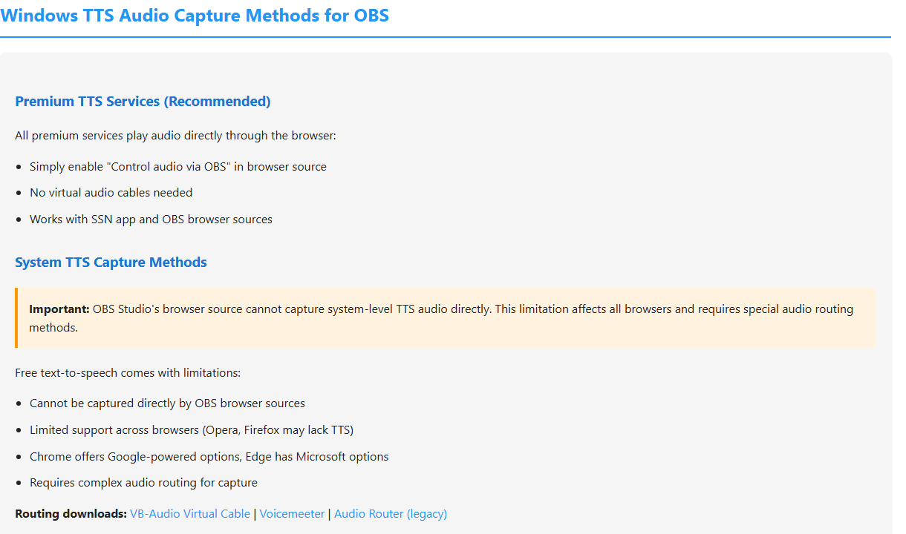

Start With The Dock
The dock is the fastest test. If the dock is empty, do not debug OBS yet. Fix the platform source first.

Decision Tree
| Test | Meaning | Next Step |
|---|---|---|
| Dock is empty | Source/platform capture is not working yet. | Check login, live page, popout/source page, app mode, or platform guide. |
| Dock works, browser overlay works | OBS browser source is the likely issue. | Refresh OBS source, check URL, dimensions, visibility, cache, and custom CSS. |
| Dock works, browser overlay blank | Wrong overlay page, wrong session, or no matching payload. | Use the same session and pick a page that matches the expected output. |
| Image works, TTS silent | Audio routing issue. | Check provider vs system TTS and OBS audio capture. |
Check The Overlay URL
Use the exact same session ID everywhere. A one-character difference creates a separate room.
https://socialstream.ninja/dock.html?session=YOUR_SESSION
https://socialstream.ninja/featured.html?session=YOUR_SESSION

If TTS Is Silent In OBS
Plain system TTS is the common trap. It may speak through your speakers while OBS Browser Source hears nothing.

Detailed help: TTS Setup Guide.
Common Fixes
- Refresh the OBS Browser Source after changing URL parameters.
- Clear OBS browser source cache if an old page keeps loading.
- Make the source visible and check that width/height are not tiny.
- Temporarily remove custom OBS CSS to rule out hidden text or opacity.
- Open the same OBS URL in a normal browser to separate OBS issues from Social Stream issues.